Favorites
Movies, shows, and books that I've enjoyed.
LetterboxdMovies & Shows:

Anomalisa
Film

Eternal Sunshine of the Spotless Mind
Film

Dial M for Murder
Film
Moneyball
Film
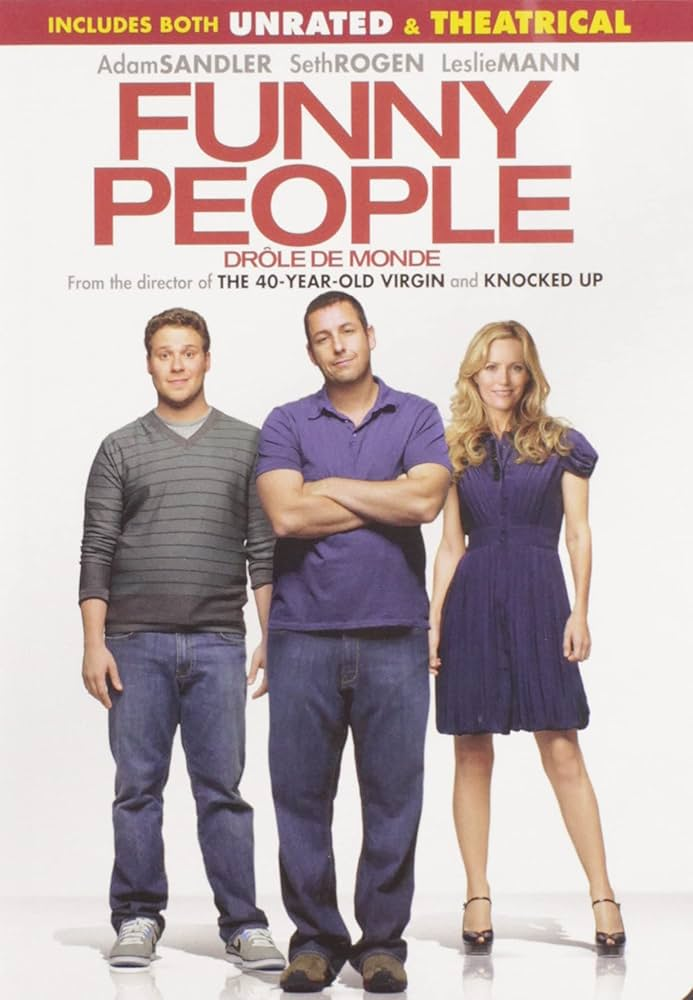
Funny People
Film
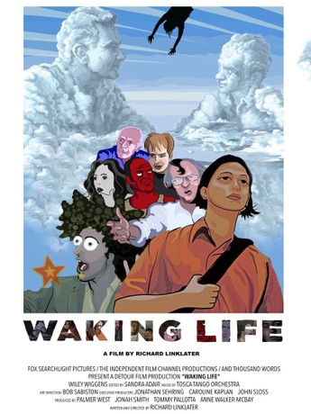
Waking Life
Film

Boyhood
Film
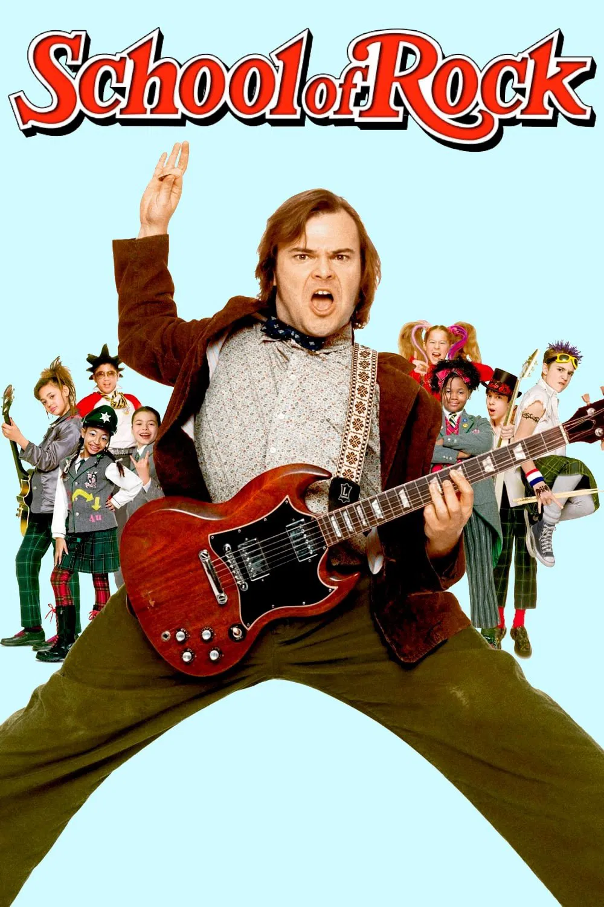
School of Rock
Film

Strangers on a Train
Film

Succession
Show

Seinfeld
Show
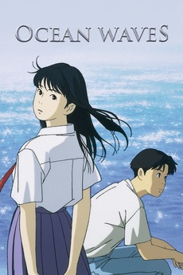
Ocean Waves
Film
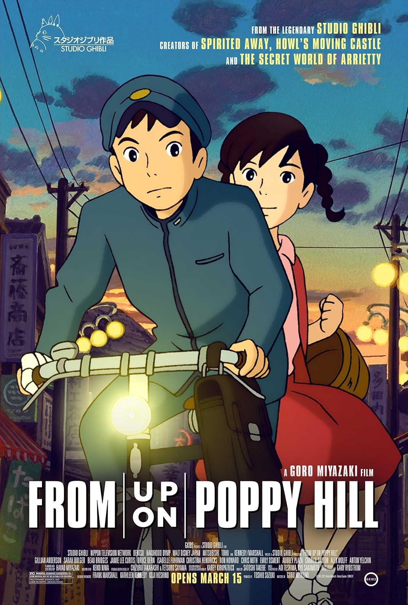
From Up on Poppy Hill
Film

Freaks and Geeks
Show

Nathan For You
Show
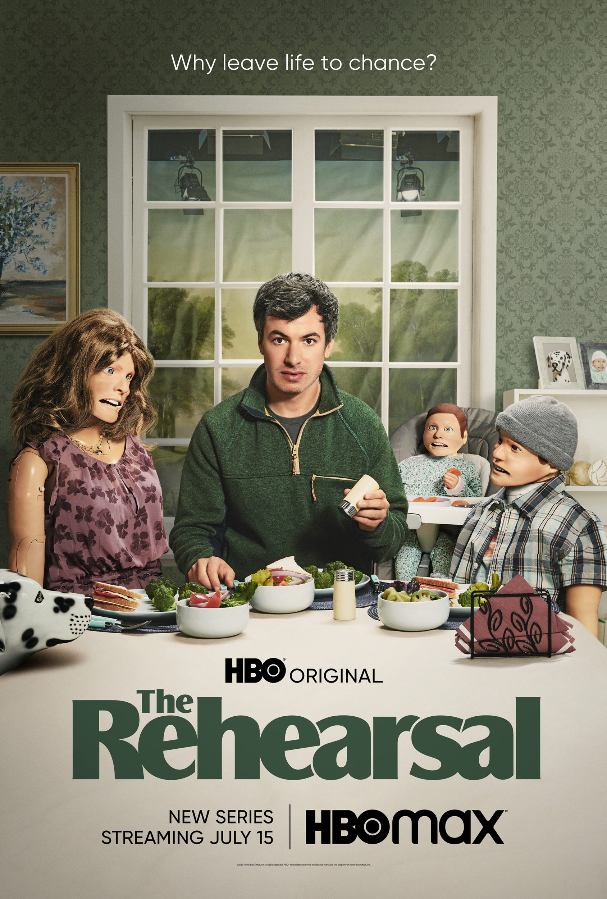
The Rehearsal
Show
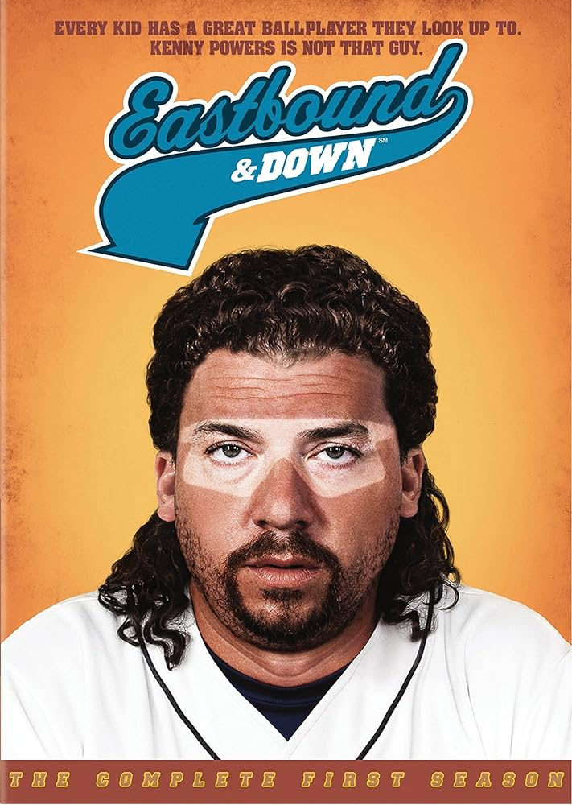
Eastbound & Down
Show

Fargo
Film
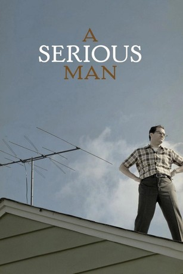
A Serious Man
Film

There Will Be Blood
Film

No Country for Old Men
Film

The Dark Knight
Film
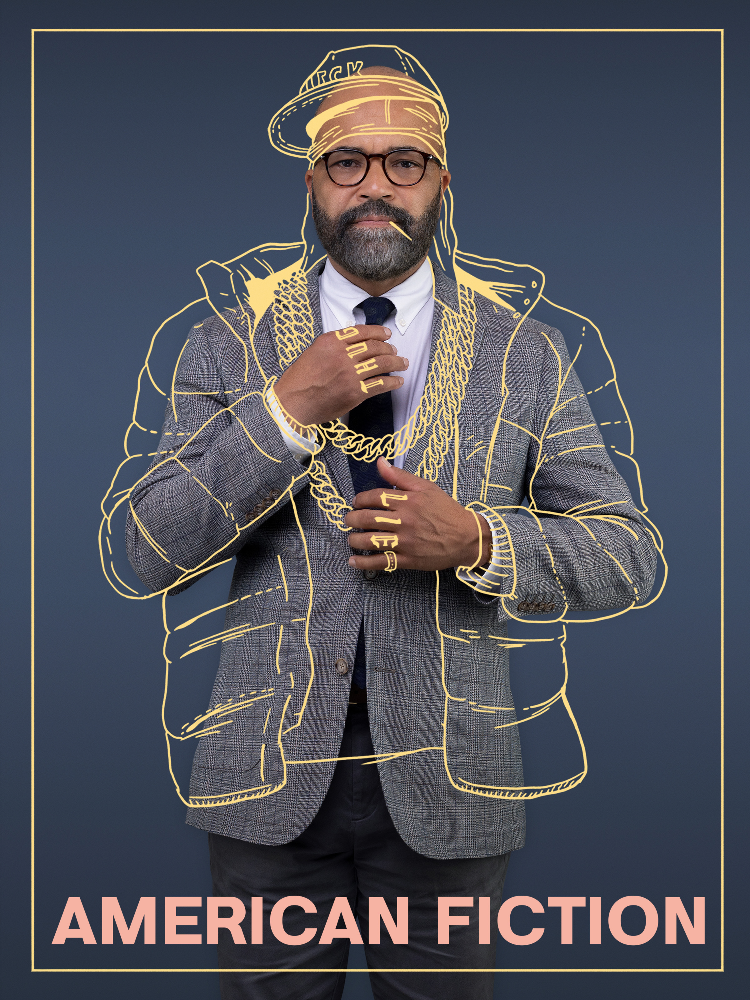
American Fiction
Film
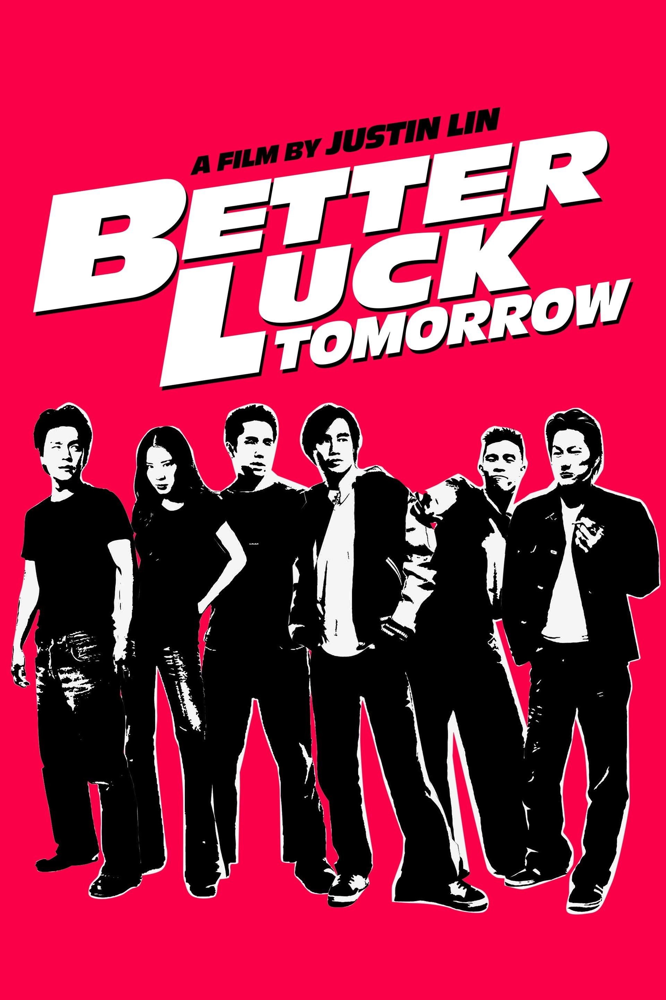
Better Luck Tomorrow
Film
Try Harder!
Documentary
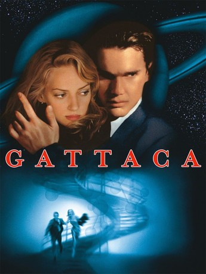
Gattaca
Film

Coraline
Film

Corpse Bride
Film
Books:
Dreams From My Father
Barack Obama

The Signal and the Noise
Nate Silver
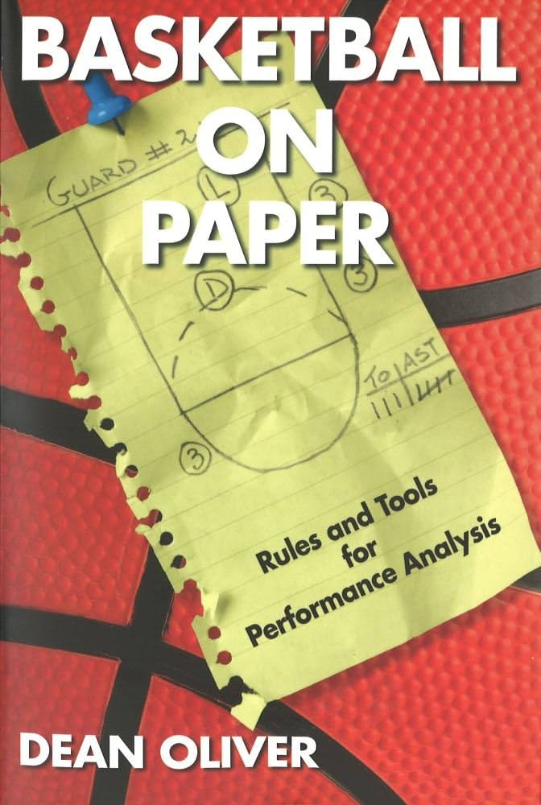
Basketball on Paper
Dean Oliver
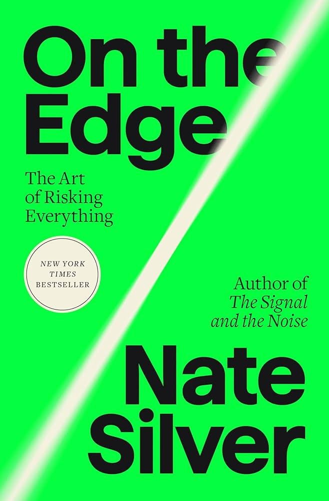
On the Edge
Nate Silver
The Audacity of Hope
Barack Obama

Thinking, Fast and Slow
Daniel Kahneman
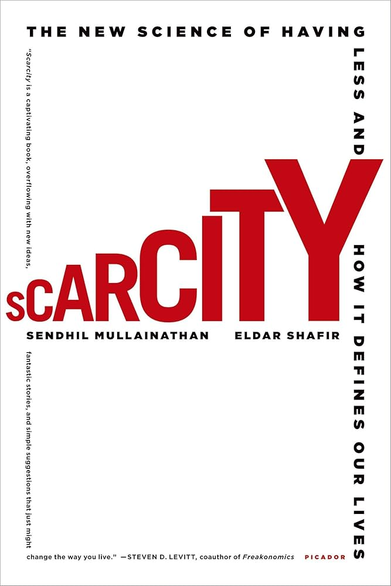
Scarcity
Mullainathan & Shafir
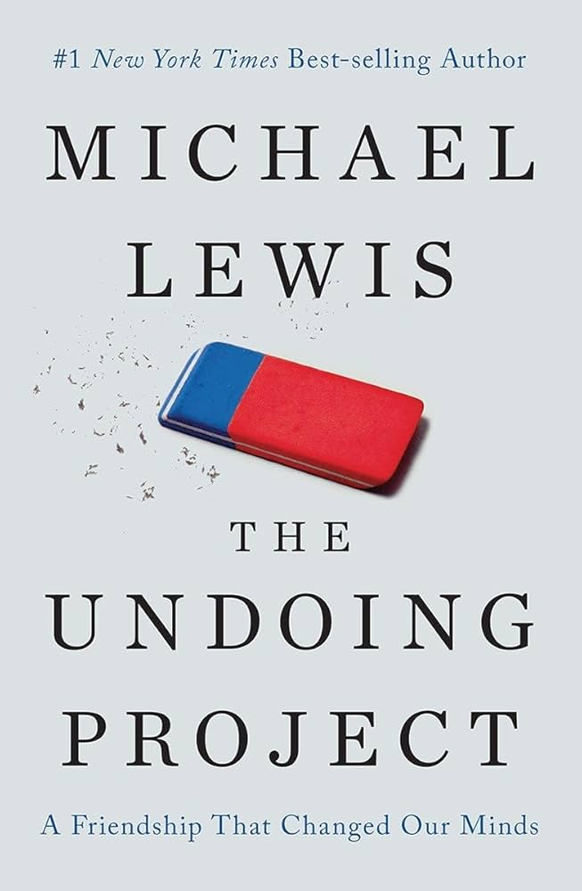
The Undoing Project
Michael Lewis
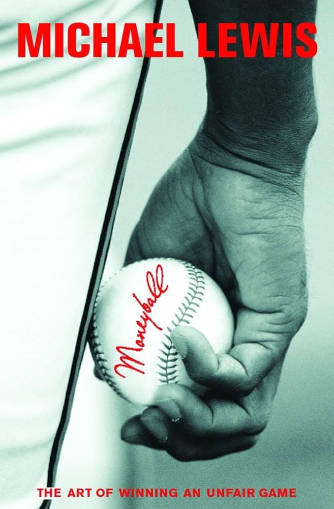
Moneyball
Michael Lewis

Freakonomics
Levitt & Dubner

Why Nations Fail
Acemoglu & Robinson
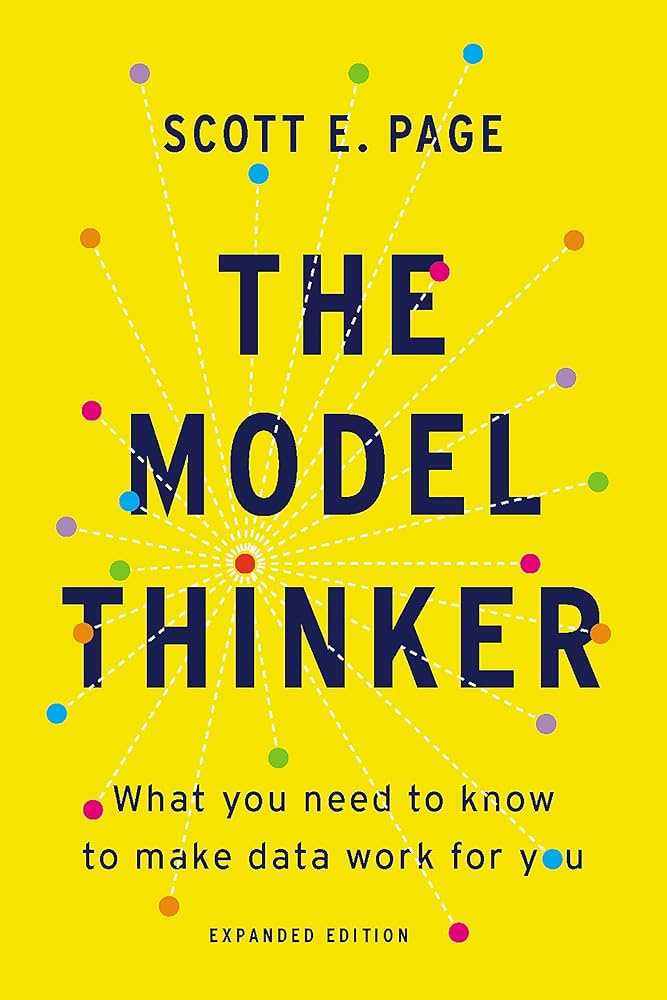
The Model Thinker
Scott E. Page
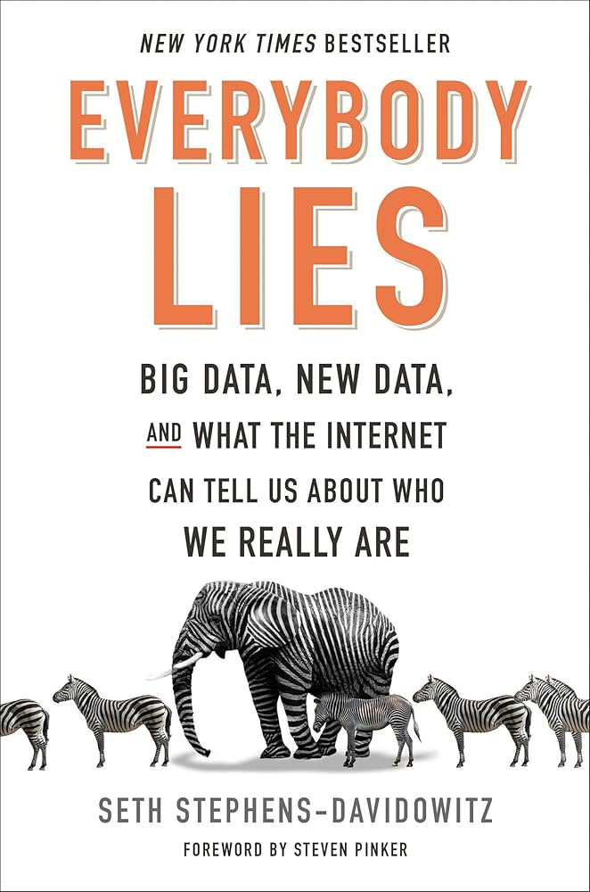
Everybody Lies
Seth Stephens-Davidowitz